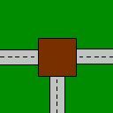
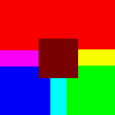
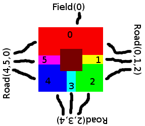

Let's start with a simple example, a T-junction. With any luck you'll recognise it.

And this is the tilemask version:

Declare_Tile('basic.tjunction',
[Field(0), Road(0,1,2), Road(2,3,4), Road(4,5,0)],
None, None,
[("hfield", 0), ("qfield", 0)] +
[("roadend", x) for x in [0,2,3] ] + [("roaddiv", 0)])
Looks a bit complicated, eh what? Let's examine the method's type definition:
def Declare_Tile(self, name, edges, flags, extra_regions, autogen_data)
self
obj.poke(), there's no need to provide the self - that's automagically set to obj. It's called this in Java, and you don't have to declare it manually. In fact you don't have to declare it in most languages. Python's a little funny.
name = 'basic.tjunction'
edges = [Field(0), Road(0,1,2), Road(2,3,4), Road(4,5,0)]
[North, East, South, West]. It's easy to remember because it's the same way CSS does it. Each item refers to what's on that particular edge, like a road or a field.
flags = None
extra_regions = None
autogen_data = [("hfield", 0), ("qfield", 0)] + [("roadend", x) for x in [0,2,3] ] + [("roaddiv", 0)]
edgesThis item describes the edges of the tile logically - this must match the mask (see autogen_data).
This is best described by a pretty diagram. I used the tilemask version for clarity (and its rainbow-like quality).

Hopefully you can see how everything fits together. Clockwise! Always clockwise!
autogen_data[("hfield", 0), ("qfield", 0)] + [("roadend", x) for x in [0,2,3] ] + [("roaddiv", 0)]
Let's break it down. A whale sandwitch as one of my lecturers would say. The plusses concatenate in this context. Gotta love operator overloading.
[("hfield", 0), ("qfield", 0)]
autogen/hfield.fig) to the mask in orientation 0 (i.e. no rotation). The second adds a qfield mask. These two together have the effect of creating one field in the North, and two fields in the South. Funnily enough, they look a lot like the tilemask but without the roads. If we didn't do this, the whole field would be red on the mask, and if the masked edges don't match the logical edges, we'll get a big exception.
[("roadend", x) for x in [0,2,3] ]
[0,2,3] in place of x.
This gives us three roadend masks. Funnily enough, they cover the field joins perfectly.
[("roaddiv", 0)]